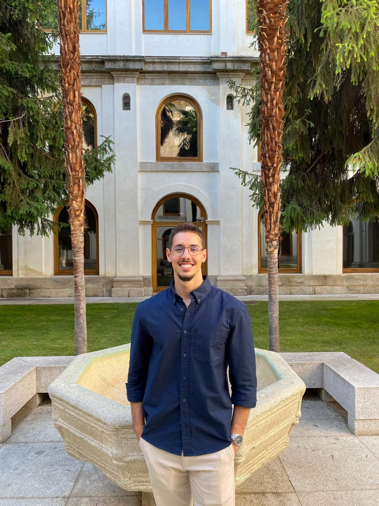
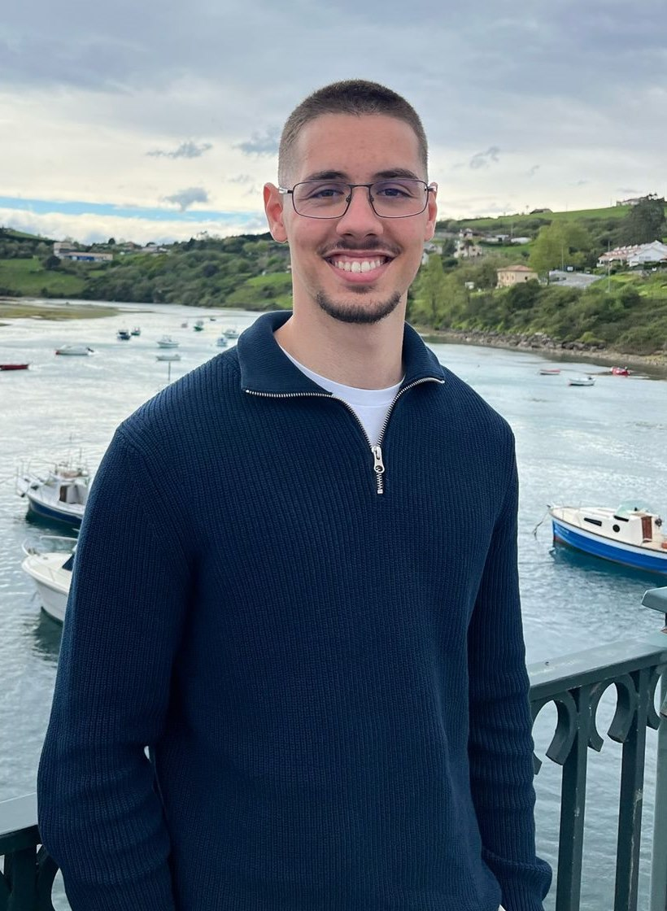
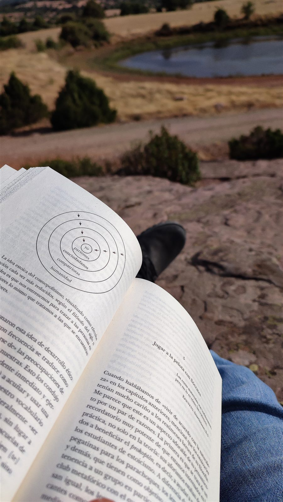

Diseño de sistemas en la intersección entre sostenibilidad, inteligencia artificial y optimización de procesos.

Trabajo en la intersección entre la ciencia ambiental y la optimización computacional. Mi trayectoria combina investigación de laboratorio, auditoría de procesos industriales y diseño de sistemas basados en IA — siempre con foco en el impacto real antes que en la abstracción teórica.
Actualmente lidero la auditoría técnica y la optimización de procesos en ACSOS (Grupo AireLimpio), donde exploro la aplicación de sistemas de IA agéntica a operaciones industriales reales. Antes de esto, realicé investigación aplicada en IMDEA Water sobre valorización de aguas residuales mediante biorreactores.
«Un profesional orientado a sistemas que trabaja en la intersección entre la ciencia ambiental y la optimización computacional.»

Diseño y despliegue de agentes inteligentes que interactúan con procesos industriales y organizativos reales. El objetivo no es la automatización por sí misma, sino un impacto medible en eficiencia, decisiones y resultados.
Desde investigación con biorreactores a escala de laboratorio hasta auditoría de cumplimiento industrial, trabajo que abarca todo el espectro de los sistemas ambientales — entender cómo fluyen la materia, la energía y la información a través de entornos naturales y de ingeniería complejos.
Construcción de soluciones estructuradas para problemas conductuales y organizativos reales. Ya sea un producto digital para hábitos de lectura o un marco organizativo para un club deportivo — definir el sistema, identificar las restricciones, diseñar para los resultados.
Un producto digital diseñado para mejorar los hábitos de lectura en un entorno digital de alta dopamina. Construido en la intersección entre ciencia del comportamiento, diseño de producto y teoría de formación de hábitos — la tecnología como herramienta para la profundidad, no para la distracción.

Investigación aplicada sobre la conversión de efluentes de cervecería en biofertilizante mediante biorreactores. Un estudio práctico de los principios de economía circular dentro de la ingeniería de tratamiento de aguas, desarrollado en el IMDEA Water Institute de Madrid.
Implementación de estrategias de optimización y exploración de IA agéntica en procesos industriales ambientales reales. Trabajo centrado en transformar los flujos de auditoría de cumplimiento mediante integración sistemática de IA en Grupo AireLimpio.
Construcción de la estructura organizativa de un club de balonmano desde cero — gobernanza, sistemas operativos y cultura desarrollados en paralelo. Una aplicación real de creación de sistemas en el dominio humano y organizativo, que exige tanto diseño como ejecución.
Liderando operaciones de auditoría técnica ambiental e impulsando la optimización de procesos con IA en flujos industriales. Mejora sistemática de los procesos de cumplimiento y calidad mediante análisis estructurado y automatización inteligente.
Especialización de posgrado en machine learning, optimización de procesos y sistemas inteligentes aplicados a entornos industriales y operativos. Puente entre los fundamentos de ciencia ambiental y los métodos computacionales.
Investigación aplicada de laboratorio sobre sistemas de biorreactores para convertir aguas residuales de cervecería en biofertilizante mediante recuperación biológica de nutrientes. Marcos de economía circular en ingeniería de tratamiento de aguas.
Formación de grado en sistemas ambientales, ecología, geoquímica y evaluación de impacto ambiental. Base en pensamiento sistémico y metodología científica.
Una capa secundaria del trabajo. Escritura reflexiva sobre las intersecciones entre tecnología, cognición, comportamiento y sistemas complejos — no como liderazgo de pensamiento, sino como pensamiento estructurado hecho visible.
Un producto para construir hábitos de lectura profunda en un mundo diseñado para fragmentar la atención. En desarrollo activo.
Ver LectorApp →Implementando flujos de IA agéntica en procesos industriales reales en ACSOS. Buscando dónde la automatización inteligente genera una ventaja operativa real.
Construyendo la estructura organizativa de un club desde cero — gobernanza, sistemas y cultura desarrollados en paralelo.